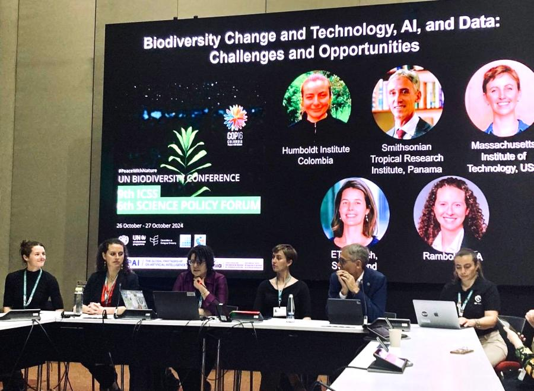
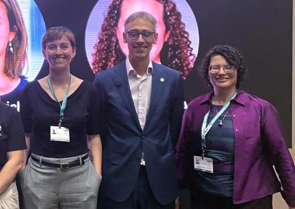

At the United Nations Biodiversity Conference (COP16), held from October 21 to November 1, Professor Tanya Berger-Wolf represented The Ohio State University, the Imageomics Institute, the ABC Global Climate Center (ABC), and the US National Committee for the International Union of Biological Sciences.
As co-organizer and leader in artificial intelligence (AI) applications for biodiversity, Berger-Wolf focused on shaping the conference dialogue to include the intersection of AI, equity, and biodiversity data.
Held in Cali, Colombia, COP16 convened experts and officials to address global biodiversity crises and policy solutions. Berger-Wolf worked on the organizing committee for the 6th Science and Policy Forum, helping to facilitate the "AI, Technology, and Data for Biodiversity" session, including panelists such as Dr. Sara Beery of ABC. The panel discussed the role of AI and technology in mitigating the loss of biodiversity.
"One of the key messages of the panel, which became part of the statement on behalf of the scientific community to the High Level Segment of the COP, was that to effectively address current and future challenges, urgent action is required in equity, governance, valuation, infrastructure, decolonization and policy frameworks around biodiversity data and artificial intelligence," Berger-Wolf said.

By engaging with global stakeholders and advocating for equitable, science-based policies, the ABC Global Climate Center emphasized its dedication to transformative, collaborative action for biodiversity preservation.
“This is the first time AI has been part of COP16,” Berger-Wolf said. “It brought urgency and a call for meaningful action in biodiversity science.”
The forum’s outcome document, presented on October 30 by Humboldt Institute Director Dr. Hernando Garcia, included Berger-Wolf’s advocacy for critical reforms: equitable governance, data decolonization, infrastructure investment, and robust policy frameworks around biodiversity data and AI.
“Urgent action is required,” she said, “to ensure that AI and biodiversity data serve communities globally, respecting both local knowledge and scientific rigor.”
This year’s COP16 underscored the power of AI in conservation, reinforcing the collaborative approach necessary to meet global biodiversity challenges head-on.